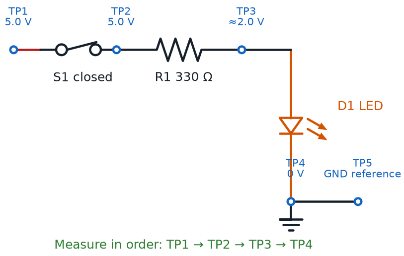

Troubleshooting and Optional Perfboard Packaging
Summary
Students learn systematic breadboard troubleshooting habits (checking for loose connections, bent leads, wrong-row placement) that they will use for the rest of the course. The chapter closes with the course's only optional, adult-supervised soldering content: moving a finished circuit onto a perfboard for a permanent build.
Concepts Covered
This chapter covers the following 20 concepts from the learning graph:
- Power-On Verification
- Circuit Testing
- Breadboard Troubleshooting
- Loose Connection
- Bent Component Lead
- Wrong Row Placement
- Breadboard Contact Wear
- Error Symptom Diagnosis
- Faulty Component Isolation
- Component Swap Testing
- Single-Change Debugging
- Perfboard
- Perfboard Layout Planning
- Point-to-Point Wiring
- Solder Joint
- Cold Solder Joint
- Low-Temperature Solder
- Solder Iron Safety
- Heat Shrink Tubing
- Wire Strain Relief
Prerequisites
This chapter builds on concepts from:
- 2. Current, Charge, Units, and Electrical Safety
- 6. Meet Your Breadboard
- 7. Wiring Skills and Circuit Layout
Chapter 7 ended with a promise: every wiring habit you just built would become your best troubleshooting tool. That promise gets cashed in right now, because here's a secret every working engineer knows — circuits don't always work on the first try, even for the pros.
Breadboard troubleshooting is the systematic process of figuring out why a circuit isn't working and fixing it, one careful check at a time. It isn't a sign you did something wrong. It's a normal, expected part of building anything real, and it's a skill you'll use in every remaining chapter of this course.
This chapter comes in two parts. Part 1 is required for every builder: a systematic method for finding and fixing the most common breadboard problems. Part 2 is optional, adult-supervised enrichment — moving a circuit that already works onto a permanent perfboard using low-temperature solder. If your classroom is breadboard-only, Part 1 is everything you need.
Time to Go Detective
 Welcome back, builder! Today you're trading your wiring toolkit for a detective's toolkit. When a circuit stays dark, you're not stuck — you're just one clue away from the fix. Let's light it up!
Welcome back, builder! Today you're trading your wiring toolkit for a detective's toolkit. When a circuit stays dark, you're not stuck — you're just one clue away from the fix. Let's light it up!
Every Builder Hits This Wall
Here's what actually happens to every electronics builder, from total beginners to engineers with decades of experience: they wire up a circuit, flip the power on, and nothing happens. No light. No beep. No spin. It happens constantly, and it happens for the most ordinary reasons — a wire in the wrong hole, a leg bent the wrong way, a connection that looks solid but isn't.
The difference between a builder who gets frustrated and a builder who gets good isn't luck. It's a method. Professional engineers don't guess randomly when something breaks — they follow a repeatable process that narrows down the problem fast, instead of poking at random wires and hoping. That process is exactly what this chapter teaches.
Debugging — the general name for finding and fixing a problem in something you built — is one of the most valuable skills in all of engineering, not just electronics. Every programmer, mechanic, and circuit designer spends real time every single day chasing down something that isn't working. Getting comfortable with that process now pays off for the rest of your life, not just this course.
A Dark LED Is Not a Failure
 Feeling annoyed when your circuit doesn't light up on the first try? Totally normal — every builder feels that! Real engineers call this "debugging," not "failing," and they do it all day long. You're not behind. You're doing exactly what the job actually looks like.
Feeling annoyed when your circuit doesn't light up on the first try? Totally normal — every builder feels that! Real engineers call this "debugging," not "failing," and they do it all day long. You're not behind. You're doing exactly what the job actually looks like.
Power-On Verification: Your First Move
Before hunting for a specific problem, start with the basics. Power-on verification is the quick set of checks you run the instant you power up a circuit, confirming that power itself is actually reaching the board before you worry about anything more complicated. Skipping this step is the single most common way builders waste time chasing a problem that was never really there.
Circuit testing is the broader practice of checking whether a circuit is behaving the way you expect, at any stage of building it — not just once, but throughout the whole process. Circuit testing after every step is what incremental building, from Chapter 7, was setting you up to do all along.
Diagram: Power-to-Load Troubleshooting Test Points

Run through this checklist the moment you power up any circuit that isn't behaving:
- Is the power source actually on and connected — battery seated, USB cable plugged in firmly?
- Are the power rail and ground rail connections from Chapter 7 both actually wired to the board?
- Does anything feel warm to the touch? If so, disconnect power immediately and re-check polarity before trying again
- Is at least one other part of the circuit working, confirming power is reaching the board at all?
- Did you double-check every component's orientation — LED polarity, chip notch — before assuming the wiring itself is wrong?
Test the Boring Stuff First
 It's tempting to jump straight to the fanciest possible explanation for a dark circuit. Resist that! Nine times out of ten, the fix is something boring — a loose battery, an unplugged rail. Rule out the boring stuff first, every time.
It's tempting to jump straight to the fanciest possible explanation for a dark circuit. Resist that! Nine times out of ten, the fix is something boring — a loose battery, an unplugged rail. Rule out the boring stuff first, every time.
The Four Usual Suspects
Once you've confirmed power is really reaching your board, most remaining breadboard problems trace back to one of four repeat offenders. Getting familiar with all four means you'll recognize them almost instantly the next time one shows up.
A loose connection is a wire or component lead that looks plugged into a breadboard hole but isn't making solid electrical contact with the spring clip inside — often because it's pushed in at an angle or not pushed in far enough. A bent component lead is a component leg that's been folded, kinked, or crossed in a way that keeps it from reaching all the way into its intended hole, even though the component looks correctly placed from above.
Wrong row placement happens when a component's legs land in the wrong row of a breadboard's internally connected strip — off by just one row is enough to break a circuit completely, since that one row isn't electrically connected to the row you meant to use. And breadboard contact wear is the gradual loosening of a breadboard's internal spring clips after hundreds of insertions, which can make an older board unreliable even when every wire and component is placed correctly.
Reading what a circuit is actually doing, and working backward toward which of these four suspects is responsible, is a skill of its own. Error symptom diagnosis is the process of observing exactly how a circuit is failing — flickering, totally dark, working only when touched — and using that specific symptom to narrow down the likely cause before touching anything.
The table below maps common symptoms to their most likely cause, and a fast way to check each one.
| Symptom | Likely Cause | Quick Check |
|---|---|---|
| LED flickers, or only lights when a wire is nudged | Loose connection | Gently wiggle each wire while powered; a flicker points straight to the culprit |
| Nothing lights, but the layout looks correct | Bent component lead | Look closely at each leg from the side — a folded leg often misses its hole |
| One part works, but a nearby part stays dark | Wrong row placement | Recount rows carefully; confirm both legs of every part share the intended row |
| An old, heavily used board works only sometimes | Breadboard contact wear | Try the same component in a fresh, unused row; if it works there, the board is worn |
The One Mistake That Wastes the Most Time
 The biggest troubleshooting mistake isn't missing a loose wire — it's changing five things at once and having no idea which change actually fixed it (or broke it worse). Slow down. Change one thing, test, then decide what's next.
The biggest troubleshooting mistake isn't missing a loose wire — it's changing five things at once and having no idea which change actually fixed it (or broke it worse). Slow down. Change one thing, test, then decide what's next.
The Three-Step Debugging Method
Recognizing the four usual suspects helps, but real troubleshooting needs an actual method — a repeatable sequence you run every single time, not just when you happen to remember to. This course teaches three steps, used together, on every stubborn circuit.
The first step is faulty component isolation — narrowing down which section, or which single component, of a circuit is responsible for the problem, instead of treating the whole circuit as one unsolvable mystery. Disconnect or bypass sections of a circuit one at a time, testing after each change, until the misbehaving section reveals itself.
Once a suspect component is identified, component swap testing confirms the diagnosis: physically replacing that one part with a component you know is good, and checking whether the problem disappears. A working replacement is strong evidence you found the actual cause — and if the new part behaves the same way, the fault was somewhere else entirely.
Both of those steps depend completely on a third rule: single-change debugging — making exactly one modification to a circuit, testing it, and only then deciding what to change next. Change two things at once and a fix might work, but you'll never really know which change did it — which means you haven't learned anything useful for next time.
- Isolate — narrow the problem down to one section or one component
- Swap-test — replace the suspect part with a known-good one and retest
- Change one thing — never modify more than one variable before testing again
Practice this exact method on a broken circuit in the sim below.
Diagram: Breadboard Troubleshooting Detective
Breadboard Troubleshooting Detective
Type: microsim
sim-id: breadboard-troubleshooting-detective
Library: p5.js
Status: Specified
Purpose: Give students hands-on practice diagnosing a non-working breadboard LED circuit by applying power-on verification, error symptom diagnosis, faulty component isolation, and single-change debugging to find one of four hidden faults.
Bloom Taxonomy: Analyze (L4). Bloom Verb: examine, distinguish.
Learning objective: Given a rendered breadboard circuit (battery, resistor, LED) with exactly one hidden fault — a loose connection, a bent component lead, wrong row placement, or breadboard contact wear — inspect the circuit, form a hypothesis about the cause, and use a virtual swap test to confirm or reject that hypothesis, changing only one variable at a time.
Reuse check: An embeddings search (find-similar-templates, mode=reuse) for "Breadboard Troubleshooting Detective" returned a top match of "Breadboard" (dmccreary/microsims, WHAT score 0.643, recommendation "template") — in the template range (0.60–0.75) but below the 0.75 reuse threshold, so it is not a close enough fit to embed directly. A keyword grep of the 3,764-entry MicroSim catalog for "troubleshoot" and "breadboard fault" found no closer beginner-electronics match. This sim reuses the Breadboard template as its rendered board graphic and is a strong candidate for the breadboard-sim-generator skill, since it needs a rendered breadboard with real tie-point holes and a deliberately introduced fault for a "find the bug" exercise.
Template: https://github.com/dmccreary/microsims/tree/main/docs/sims/breadboard
Canvas layout: Left/main area shows a rendered half-size breadboard with a battery pack, resistor, and LED wired in a simple series circuit; right side panel holds a power switch, four hypothesis buttons (Loose Connection, Bent Lead, Wrong Row, Contact Wear), a "Swap Test" button, and an infobox.
Components/elements involved: A rendered breadboard with power rails and terminal-strip rows; battery, resistor, and LED components with visible leads; a magnifying "inspect" cursor; four labeled hypothesis buttons; a "New Fault" button.
Required interactivity: - Click the power switch to energize the circuit; the LED stays dark because a hidden fault is active - Hover or click any wire, lead, or row on the breadboard to "inspect" it, opening a zoomed infobox describing what that specific spot looks like up close - Select one of the four hypothesis buttons based on what the inspection revealed - Click "Swap Test" to virtually replace or fix the selected suspect; a correct hypothesis lights the LED and shows a green infobox explaining the real fault and why the symptom matched it; an incorrect hypothesis shows a red infobox explaining why that guess doesn't match the evidence, without revealing the answer - Button: "New Fault" randomly activates a different one of the four faults for repeated practice
Default state: Circuit powered off, LED dark, no hypothesis selected, "Swap Test" disabled until a hypothesis is chosen.
Instructional Rationale: An Analyze-level "examine/distinguish" objective calls for comparing observable evidence against multiple candidate causes, which a find-the-fault interactive pattern delivers far better than a passive animation — learners must actually inspect, hypothesize, and single-change test exactly as described in this chapter's three-step method.
Color scheme: Warm orange for the currently inspected element, green/red for correct/incorrect swap-test feedback, light neutral gray for unselected hypothesis buttons, consistent with the palette used in this chapter's other diagrams.
Responsive behavior: Breadboard view and the hypothesis/control panel stack vertically on narrow screens; inspection works via tap on touch devices as an alternative to hover.
Implementation: p5.js, built on the breadboard-sim-generator rendering approach (real tie-point hole grid, component placement, and animated current flow once the fault is fixed); fault state and evidence text stored in a lookup table keyed by fault id.
The Habit That Beats Every Bug
 If you remember only one thing from this whole chapter, make it this: change one thing, then test. That single habit — single-change debugging — solves more mystery circuits than any amount of electronics knowledge ever will.
If you remember only one thing from this whole chapter, make it this: change one thing, then test. That single habit — single-change debugging — solves more mystery circuits than any amount of electronics knowledge ever will.
Optional From Here On
Everything below this point is optional, adult-supervised enrichment about soldering a working circuit onto a permanent perfboard. It is not required to complete any core lesson in this course. If you're building on a breadboard only, you've already learned everything you need — feel free to jump straight down to the Chapter Summary near the end of this chapter.
Giving a Circuit a Permanent Home
A breadboard, as Chapter 7 explained, is built for prototyping — testing ideas fast, not surviving a backpack. Once a circuit works exactly the way you want, some builders like to give it a permanent, rugged home instead of leaving it clipped into a breadboard forever. That's what the rest of this chapter covers, and it's the only place in this entire course where a soldering iron shows up.
A perfboard is a rigid board covered in a grid of evenly spaced, pre-drilled holes — usually with a small ring of copper around each hole — used to build a permanent version of a circuit that has already been proven to work on a breadboard. Unlike a breadboard, nothing on a perfboard is automatically connected; every single link between holes has to be made by hand, with wire and solder.
That difference is exactly why perfboard layout planning matters so much: mapping out, ahead of time, exactly where each component will sit on a perfboard's hole grid and exactly which holes each wire will connect — using your already-working breadboard circuit as the answer key. Skipping this planning step on a perfboard costs far more than skipping it on a breadboard, since a soldered mistake takes real effort to undo.
With a layout planned, building the actual connections uses a technique breadboards never required: point-to-point wiring — connecting components on a perfboard using individual wires or carefully bent component leads, soldered directly from hole to hole, since there's no internal copper strip doing that job automatically. Every connection your breadboard's hidden rows used to make for free now has to be built by hand, one solder joint at a time.
Your Breadboard Is Your Blueprint
Don't redesign anything when you move to perfboard — copy it! Photograph or sketch your working breadboard circuit first, and use that picture as your exact perfboard layout plan. The hard design thinking is already done.
Solder Joints: Good, Cold, and How to Tell Them Apart
Point-to-point wiring holds together because of one small but critical connection. A solder joint is the permanent electrical and mechanical connection formed when melted solder — a metal alloy with a low melting point — flows around a wire lead and a copper pad, then cools into a solid bond. A good solder joint conducts electricity just as well as a thick chunk of solid copper.
Not every solder joint turns out that way, though. A cold solder joint is a weak, unreliable connection that forms when the metal never gets fully melted and bonded — often because the joint wasn't heated enough, or because something moved while the solder was cooling. A cold solder joint might look connected, and might even work for a while, but it's prone to breaking or going intermittent with the lightest bump.
Beginners get an easier path into soldering thanks to low-temperature solder — a solder alloy specifically formulated to melt at a lower temperature than traditional solder, which lowers burn risk and makes a good joint easier to achieve on a first attempt. This course's optional soldering activities are built around low-temperature solder for exactly that reason.
Learning to spot the difference by eye is a skill every solderer builds over time. The table below compares what a good joint and a cold joint each look and feel like.
| Feature | Good Solder Joint | Cold Solder Joint |
|---|---|---|
| Surface | Shiny and smooth | Dull, grainy, or cracked |
| Shape | Smooth cone, like a small volcano | Lumpy, blobby, or uneven |
| Coverage | Solder fully coats the wire and pad | Partial — bare wire or pad may still show |
| Strength | Solid; the wire doesn't wiggle | Loose; the wire may shift slightly |
| Usual cause | Right heat, clean parts, held still while cooling | Not enough heat, movement while cooling, or dirty parts |
Solder Iron Safety
A soldering iron gets hot enough to melt metal, which means it deserves real respect — not fear, just respect, the same way a kitchen stove does. Solder iron safety is the full set of practices that keep a soldering iron from causing a burn, a fire, or unwanted fume exposure: always working with an adult present, resting the iron in its stand whenever it isn't actively in your hand, keeping the hot tip away from skin, cords, and the table surface, working in a well-ventilated space, and wearing eye protection.
None of this is meant to make soldering feel scary — thousands of students solder safely every year, and with the low-temperature solder this course uses, the process is genuinely approachable. The goal is simply that every safety habit is automatic before the iron ever heats up, not figured out in the moment.
Follow this checklist every time a soldering iron is powered on:
- An adult is present and supervising for the entire soldering session — no exceptions
- The iron rests in its stand any time it's not actively being used, never on the table
- Long hair is tied back, sleeves are out of the way, and safety glasses are on
- Soldering happens in a well-ventilated area — an open window or a small fan clears the fumes
- The iron is unplugged and fully cooled before anyone packs it away
Hot Tools Deserve a Plan, Not Panic
A soldering iron tip can reach over 600°F (315°C) — way too hot to ever touch on purpose. That's exactly why this course keeps soldering optional, adult-supervised, and built around beginner-friendly low-temperature solder. Treat the iron with the same calm respect you'd give a hot glue gun, follow the checklist above, and you'll be just fine.
Finishing Touches: Heat Shrink Tubing and Strain Relief
Two last details separate a rough first solder job from one that survives years of handling. Heat shrink tubing is a plastic sleeve that slides over a bare wire or a finished solder joint and then shrinks tightly around it when warmed, insulating the connection and protecting it from accidentally touching a neighboring wire. Slide the tubing onto the wire before soldering — it can't go on afterward — then shrink it once the joint has cooled.
The second detail protects the joint itself from a completely different kind of damage: mechanical stress. Wire strain relief is any technique that keeps the pulling, bending, or flexing force on a wire from transferring directly onto a fragile solder joint — a small loop of extra wire, a clip, or a tie point positioned just before the joint absorbs that stress instead. A solder joint is an excellent electrical connection, but it's a poor shock absorber; strain relief is what keeps a good joint good for years.
Practice sorting good and cold solder joints by eye in the sim below.
Diagram: Solder Joint Quality Classifier
Solder Joint Quality Classifier
Type: microsim
sim-id: solder-joint-quality-classifier
Library: p5.js
Status: Specified
Purpose: Let students practice visually distinguishing a good solder joint from a cold solder joint using shine, shape, and coverage as judging criteria, reinforcing solder joint and cold solder joint before any real soldering activity.
Bloom Taxonomy: Evaluate (L5). Bloom Verb: judge, assess.
Learning objective: Given eight vector-rendered solder joint examples on a perfboard pad, sort each one into a "Good Joint" or "Cold Joint" bin by judging its shine, shape, and coverage, and justify each judgment against a three-criteria rubric revealed in the feedback infobox.
Reuse check: An embeddings search (find-similar-templates, mode=reuse) for "Solder Joint Quality Classifier" returned a top match of "Purpose Classification Sorter" (dmccreary/infographics, WHAT score 0.4369, recommendation "generate") — below the 0.60 template threshold, so no existing sim is a close enough starting point. A keyword grep of the 3,764-entry MicroSim catalog for "solder" and "solder joint" returned zero matches. This is a new specification.
Canvas layout: A tray of eight shuffled solder-joint icons across the top of the canvas; two labeled drop bins ("Good Joint" and "Cold Joint") below; a small infobox panel to the side or bottom.
Components/elements involved: Eight vector-rendered solder joint icons, each showing a wire lead soldered to a round copper perfboard pad, varying in shine (glossy vs. dull), shape (smooth cone vs. lumpy blob), and coverage (fully coated vs. partially bare); two sorting bins; a rubric card listing the three judging criteria.
Required interactivity: - Drag (or tap-to-select, tap-to-place) each joint icon into the "Good Joint" or "Cold Joint" bin - Immediate per-joint feedback: a green outline and a one-sentence explanation for a correct sort, a red outline and an explanation of the visual cue that was missed for an incorrect sort - Hover any joint at any time, before sorting, to see a neutral callout labeling its shine/shape/coverage without revealing whether it's good or cold - Button: "Check All" tallies the final score once all eight are sorted - Button: "New Set" reshuffles a fresh set of eight joints, with a different mix of good and cold examples, for repeated practice
Default state: All eight joints unsorted in the top tray; both bins empty; "Check All" disabled until every joint has been placed in a bin.
Instructional Rationale: An Evaluate-level "judge/assess" objective calls for a classification-sorter pattern with rubric-based feedback rather than a passive description, so learners practice the exact visual judgment call — shine, shape, coverage — they will need before ever picking up a real soldering iron.
Color scheme: Warm orange for the currently dragged joint, green/red for correct/incorrect bin feedback, light neutral gray for the unsorted tray, consistent with the palette used across this chapter's other diagrams.
Responsive behavior: Tray and bins stack vertically on narrow screens; drag-and-drop also supports tap-to-select-then-tap-to-place as a touch-friendly alternative.
Implementation: p5.js, with solder joint icons as procedurally drawn vector shapes (not photographs) so shine, shape, and coverage can be adjusted parametrically; each icon keyed to a metadata table of {shine, shape, coverage, isGood} used both for rendering and for grading.
Chapter Summary: Key Takeaways
Whether you stopped after Part 1 or followed a working circuit all the way onto a perfboard, you've added something every builder needs: the ability to face a broken circuit calmly and fix it.
- Breadboard troubleshooting starts with power-on verification and ongoing circuit testing — confirm the basics before chasing anything fancy
- The four usual suspects behind a dead circuit are a loose connection, a bent component lead, wrong row placement, and breadboard contact wear — and error symptom diagnosis helps you read which one you're facing
- The three-step debugging method — faulty component isolation, component swap testing, and above all single-change debugging — turns guessing into a repeatable, reliable process
- Optionally, a proven circuit can move onto a perfboard, built from perfboard layout planning and point-to-point wiring
- A strong solder joint looks shiny, smooth, and fully coated — nothing like a dull, lumpy cold solder joint — and beginner-friendly low-temperature solder makes that easier to achieve
- Solder iron safety, heat shrink tubing, and wire strain relief keep an optional soldering project safe and durable for years
Next up in Chapter 9: your first real component deep-dive, resistors and capacitors, where the values, codes, and behaviors you've been taking for granted finally get explained in full.
Troubleshooting Skills: Unlocked
 You did it, builder — you can now face a dead circuit without panicking, and that might be the single most useful superpower in this whole course. Whether you stopped at breadboard troubleshooting or soldered your very first perfboard, current's flowing your way. Onward to Chapter 9!
You did it, builder — you can now face a dead circuit without panicking, and that might be the single most useful superpower in this whole course. Whether you stopped at breadboard troubleshooting or soldered your very first perfboard, current's flowing your way. Onward to Chapter 9!